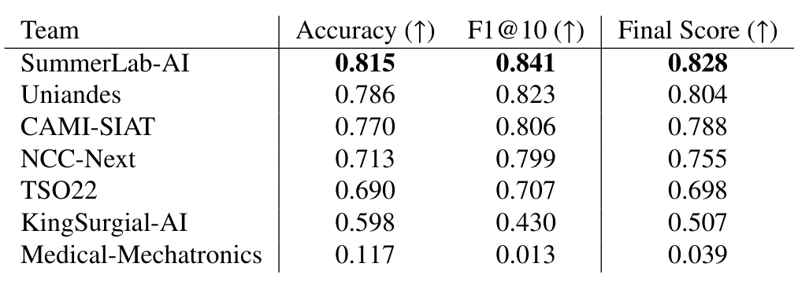
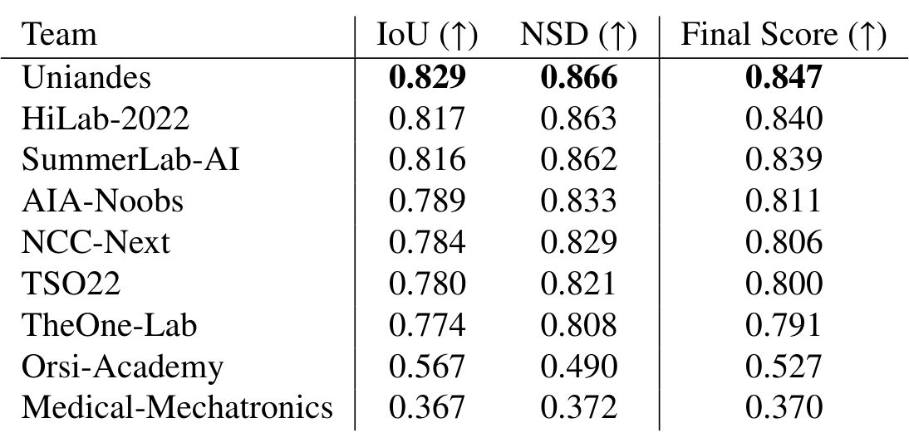
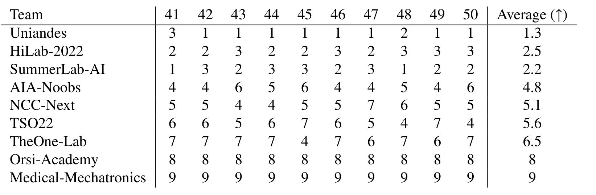
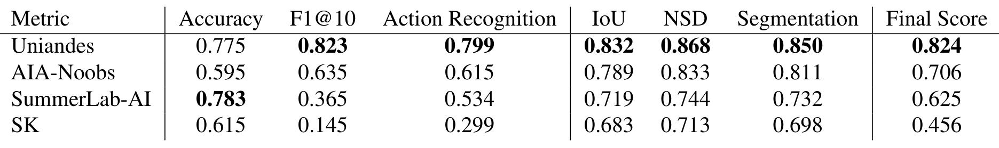

图文解读
1背景与动机
手术动作识别和器械分割模型在受控数据上表现好，到真实手术里会变差。 动作识别多用 JIGSAWS 这类训练台数据，分割多用 EndoVis 2017 与 2018 的猪体或离体场景。论文认为两者与真实手术视频之间有领域差异。
真实数据难采集：伦理、法规、多中心协调都是门槛，逐帧人工标注又贵又易错。
另一个缺口是两个任务一直分开做。器械的位置和形态本可以提示当前动作，但很少有数据同时提供两种标签，所以也没人能系统检验两者互相帮助的效果。
2核心观点速览
这是一篇挑战赛总结论文：发布数据集、定义评分、汇总参赛结果，不提出作者自己的模型。
- 数据：50 例真实 RARP 的 DVC 缝合视频，动作 8 类按 10Hz 标注，器械 9 类按 1Hz 标注。
- 划分：40 例 12998 帧训练，10 例 3252 帧测试。
- 参赛：12 支队伍，提交 7 个动作识别、9 个分割、4 个多任务方法。
- 结果：动作最高 0.828，分割最高 0.847，多任务最高 0.824。
- 边界：方法结论都来自跨队比较；多任务是否有用，论文自己说无定论。
3数据从哪来
数据只来自一家医院、一种机器人、一个缝合步骤，这决定了它能测什么。 50 例手术在伦敦大学学院医院完成，都用 da Vinci Si 机器人，由 8 位资历不同的外科医生主刀。
截取的片段是背深静脉复合体（DVC）的缝合：前列腺与膀胱、尿道断开后，缝合这一血管丛来控制出血。视频之间在光照、颜色、出血量、镜头污染上都有差异。
SAR-RARP50 是 RARP45 的超集，新增 5 例手术，并给全部视频补上 1Hz 的分割掩码。
接下来看两种标签各自怎么定义。
4两种标签怎么定义
动作标签回答“双手此刻在做哪一步”，分割标签回答“每个像素属于哪个器械零件”。
动作有 8 类：G0 背景，G1 到 G7 依次是拾针、定位针尖、进针、出针、打结、剪线、放下缝针。标注由一名研究者完成，论文未说明是否做过一致性检验。在 RARP45 上，单例缝合平均约 5 分钟，G5 打结在超过 75% 的手术中缺席。
分割有 9 类：器械按杆、腕、钳口三段标注，另有缝针、缝线、夹子、吸引器、针持、导尿管。标注协议规定了遮挡、带孔钳口、液体覆盖、完全浸没、低照度、暗角六种情形的处理方式。
类别极不平衡。 器械杆在训练集上平均占画面 12.04%，夹子、导尿管、针持都不到 0.3%。按类平均的 mIoU 因此容易被小类拉低。
5评分规则
三个子挑战都用两项指标的几何平均，任何一项太低都会拉低总分。
帧准确率 FWA 只看每帧分类对不对。分段 F1@10 把连续同类帧当作片段，片段 IoU 超过 0.1 就算命中，它主要惩罚预测碎片化和乱序。
NSD 统计边界像素中距离对方边界小于阈值 $\tau$ 的比例，比 IoU 更宽容贴边误差。阈值 $\tau$ 的取值论文未说明，复现者无法确定 mNSD 的严格程度。论文的 NSD 公式（11）分母印刷为两个 $\Delta^{Target}$，与文字定义不一致。
赛后，作者还对每段测试视频单独打分、单独排名，再对名次取平均，检验总榜是否稳定。
6动作识别：时序建模拉开差距

前五名都有时序建模，分数在 0.698 到 0.828 之间；逐帧分类的 Medical-Mechatronics 只有 0.039。 后者 F1@10 仅 0.013，说明没有时序上下文时预测会碎成大量短片段。
SummerLab-AI 用预训练特征加 ASFormer，以 0.828 领先第二名 0.024。逐视频排名平均名次为 1.7、2.4、2.8，与总榜一致，前三名排名稳定。
视频之间差别明显。资深顾问完成的视频 44 得分最高，出血少、动作规整；低年资住院医生完成的视频 46 得分最低，出血、镜头运动和助手干预都更多。
7器械分割：前排接近，失败在小类

前七名都在 0.791 以上，第一与第三只差 0.008。 Uniandes 以 0.847 第一，它是唯一先在 EndoVis 2017 与 2018 上微调的队伍。

换成逐视频排名，SummerLab-AI 平均名次 2.2，排到 HiLab-2022 的 2.5 之前，第二、第三名对调。聚合方式会改变名次。
作者观察到，用测试时增强的卷积网络 AIA-Noobs 排第 4，超过未用增强的两个注意力模型，并据此认为测试时增强比集成更有效。
定性样例中，所有队伍都把视频 42 的吸引器误分为器械杆；视频 48 的施夹器，除 AIA-Noobs 外都分错了类别。罕见器械是共同短板。
8多任务：看不出互相帮助

唯一能直接对照的 Uniandes，多任务分割 0.850 对单任务 0.847，动作 0.799 对单任务 0.804，差别只有千分之几。 其余三队要么是级联，要么提交了不同网络，要么没有单任务版本。
采样率处理与动作分对应：保留 10Hz 动作标签的 Uniandes、AIA-Noobs 动作分更高，把动作标签降到 1Hz 的两队更低。
SummerLab-AI 多任务准确率 0.783 最高，F1@10 却只有 0.365，片段很碎；Team SK 用单帧预测，F1@10 只有 0.145。
论文的结论是：基于收到的提交，无法判断多任务能否提升精度。
9结果没说什么
我的判断：论文里的方法结论都是相关观察，不是因果证据。
- 各队训练划分、分辨率、预训练、后处理都不同，没有任何受控消融。
- 测试时增强与集成的比较涉及两支不同队伍，作者自己也说难以比较。
- Uniandes 的分割优势也可能来自
Mask2Former的结构，而非手术数据预训练。 - 测试集只有 10 例，前三名之间没有置信区间或显著性检验。
论文还有几处前后不一致：HiLab-2022 在方法节写为 Swin 与 SegFormer 集成，讨论节写成 Swin 加 UperNet；摘要称 EndoVis 2022，结论节称 Endovis2023。
10复现要注意什么
- NSD 阈值 $\tau$、F1@10 的片段匹配细节论文未说明，需要查官方评测代码。
- 动作与分割采样率不同，多任务训练时注意对齐，保留 10Hz 动作标签。
- 单中心、单术式、单一机器人：外推到其他医院或术式前需要另行验证。
- 测试标签是否公开、数据许可条款，论文未说明，使用前需查看数据仓库页面。